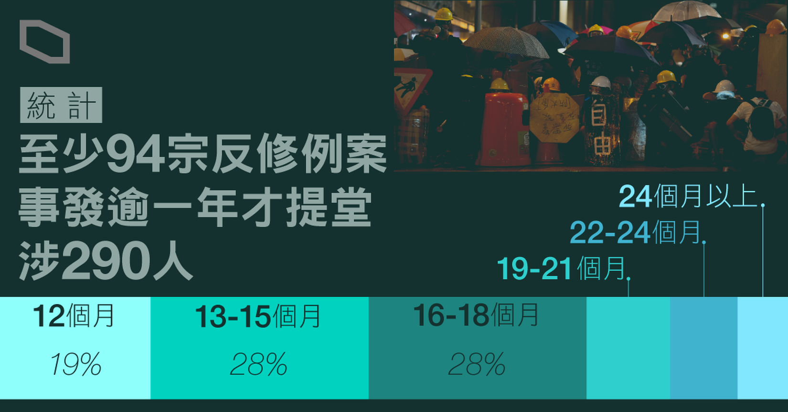
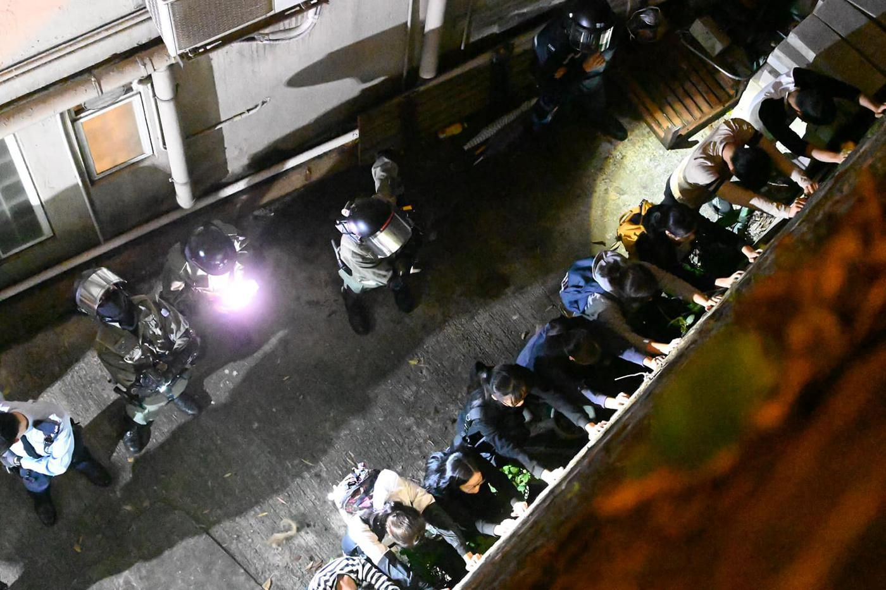
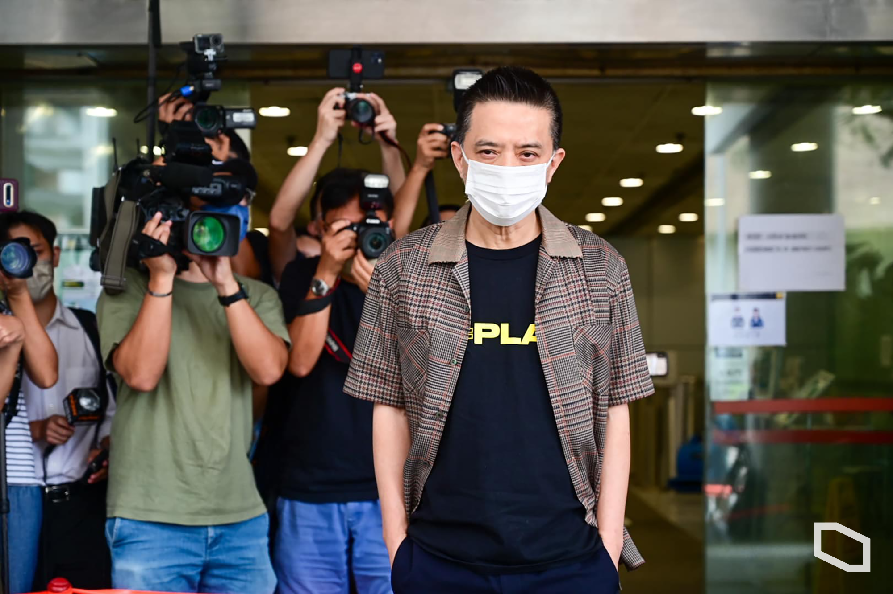
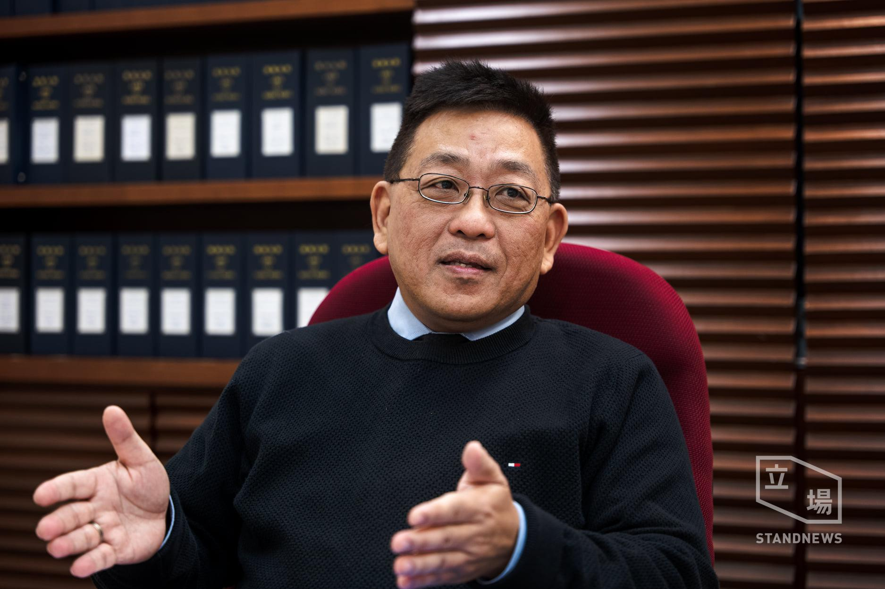
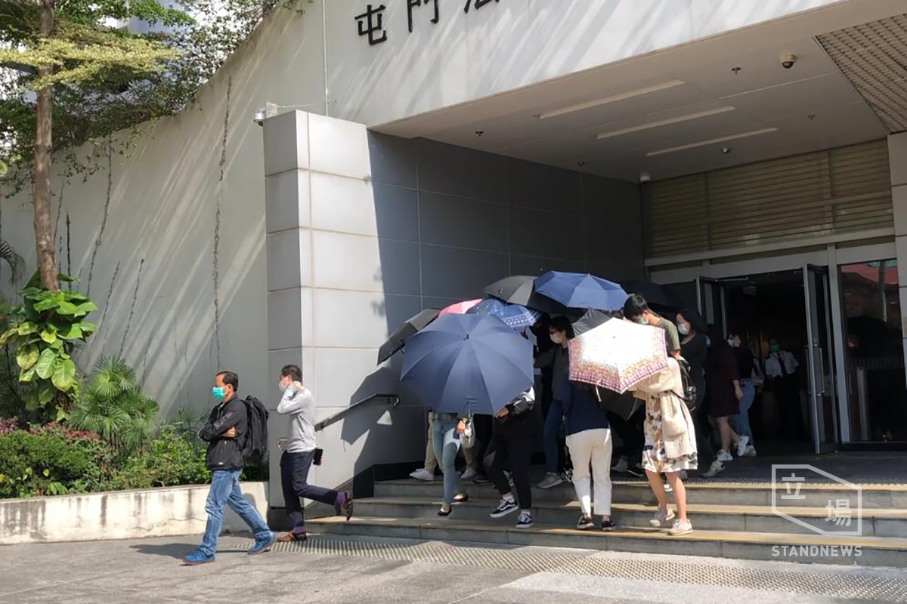
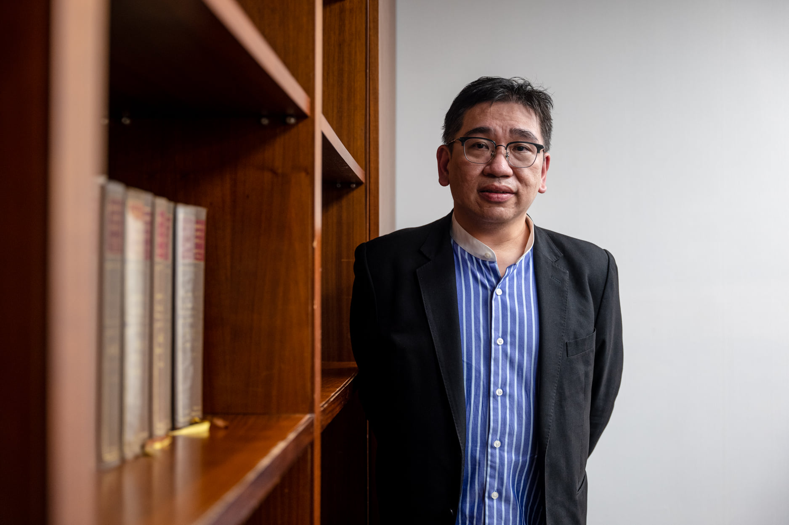
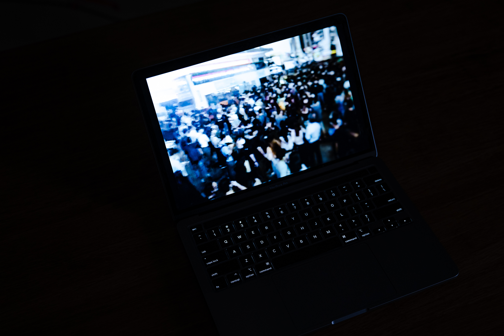
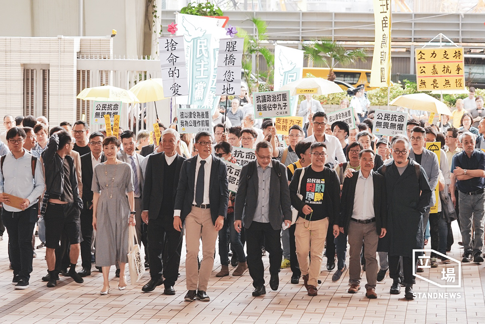
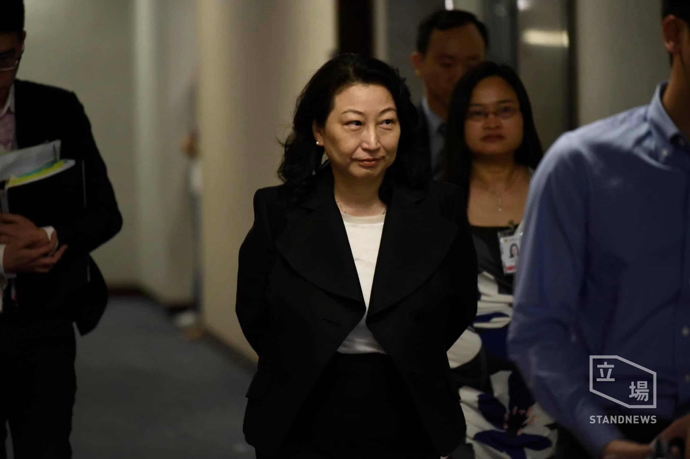
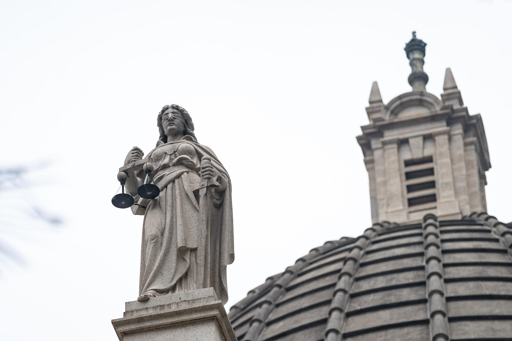

【滯留 2019．下】統計顯示至少 290 人事發後逾一年方提堂 大律師：延誤損公平審訊

《立場新聞》統計發現，截至今年 11 月 8 日，與反修例運動有關的案件中，有至少 94 宗是在事發一年或以上才首次於法院提堂，牽涉被告 290 人。
案發與首次提堂日期相隔時間
如今距離 2019 年下旬爆發反修例運動，已經兩年有多，警方最新數字顯示，由 2019 年 6 月 9 日至今年 9 月 30 日，警方於各區示威活動中共拘捕 10,269 人。其中最多人被捕的一個月份，是 2019 年 11 月，共有 2899 人被捕。
誠然，兩年後的 11 月，每日法庭新聞版面，仍沒有一天缺少了示威案件。
在眾多提堂案件中，不難發現，部分案件在今年內才首次提堂。換言之，如果案件發生在 2019 年底至 2020 年初街頭衝突最激烈之時，案件正式落案檢控及首次提堂，距離事發已年半甚至兩年。
《立場新聞》透過統計報道及通訊軟件 Telegram 頻道「法庭文字直播台」信息，發現截至今年 11 月 8 日，牽涉反修例運動的案件中，有至少 94 宗是在事發一年過外才首次於法院提堂，牽涉被告 290 人。不過基於統計方法有可能有遺漏，此數字非常可能屬於低估。
《基本法》、《香港人權法案條例》訂明，被告享有盡早接受公平審判的權利，不得無故稽延。但由於社會運動衍生的龐大拘捕及檢控數字，目前大量案件積壓，整合法庭報道，部分預定於區域法院審訊的案件，現時已排期至預期 2024 年審結，早前一宗今年首次提堂、涉理大事件的暴動案中，法官李慶年亦質疑控方處理案件進度緩慢，明言要求盡快審訊，「等被告可以盡快重新上路」。
處理刑事案逾三十年的大律師沈士文接受《立場》訪問時形容，現時不論是由拘捕到檢控、檢控到排期審訊所需時間，均與他執業多年來的認知，大相徑庭。
「一般而言，你在現場畀人拉咗，（警方）搜證，去到真係告你，相隔 18 個月係太長，12 個月都太長。以往正常、唔係太複雜的案件，一般 2、3 個月會決定到係咪起訴。」
不過沈士文表示，在 2019 年極大拘捕數字下，加上部分案件牽涉大量被告及證人，警方、律政司、以至法庭工作量已超越維持以往正常司法程序所需要時間之所能負荷，情況亦不難理解。
早前有立法會議員質疑，檢控進度緩慢，「瓶頸」在於律政司。而據沈士文觀察，瓶頸從警方搜證、到律政司審視調查調查結果、是否進行檢控，到法庭排期審訊，逐個環節堆塞。他早前處理過的其中一宗示威案件，法官在庭上厲聲要求控方交代案件進度延誤原因，控方律師百般為難，坦言自己也是新接手案件，「當然（控方）好唔願意講，但最終都係要承認，呢個 case 係擺咗喺檯度好耐，幾個月無人理。」
「唔係要鬧、要針對佢哋，但客觀地佢哋真係受到咁嘅壓力。個 bottleneck 由警察、去到律政司；由律政司，就去咗法庭。」
早在兩年前有法律界人士提出質疑，指在「濫捕濫告」下，司法必然遭受衝擊。兩年過去，法庭處理案件進度如何？延誤檢控及審訊，對被告的公平審訊權利，有沒有造成影響？

* * *
統計結果：至少 94 宗社運案事發後一年始提堂 涉 290 被告
《立場》透過翻查法庭報道，及在 Telegram 頻道「法庭文字直播台」以「新案件」、「事隔」、「相隔」三個關鍵詞搜索，嘗試統計自 2020 年 6 月 9 日起（6.9 遊行一周年），相隔案發日期 12 個月或更長的法庭案件數目，以及其牽涉的被告人數、首次提堂時的控罪、以及案發日期與提堂日相隔時間等資料。
和其他刑事案件一樣，如果一個人被拘捕，警方需要在拘捕後 24 小時內決定，是否即時將被捕人帶上法庭起訴。如果未即時起訴，則要批准被捕人擔保，或如果被捕人拒絕接受保釋條件（俗稱「拒保」），則要無條件釋放被捕人。
由於香港刑事案件一般沒有追溯期限，不論在警署擔保期間，或被捕人「拒保」或已經「踢保」（拒絕續保），除非警方通知被捕人已終止調查（即「銷案」），否則理論上，律政司可在稍後任何時候正式落案起訴被捕人，並安排案件在法院正式提堂。

據《立場》統計，截至今年 11 月 8 日，牽涉 2019 至 2020 年社會運動的案件之中，有至少 94 宗【註】在案發日期後至少 1 年才於法院首次提堂，牽涉被告至少 290 人。
其中約兩成案件的首次提堂日期，與案發日期相隔剛好 12 個月；首次提堂與案發相隔 13 至 15 個月，及相隔 16 個月至年半的案件最多，共佔逾五成。而首次提堂與案發日期相隔 22 個月至兩年，及相隔超過兩年或以上的案件，分別有 8 宗及 6 宗，合共佔近一成半。
12個月
19%
13-15個月
28%
16-18個月
28%
19-21個月
11%
22-24個月
9%
24個月以上
6%
牽涉最多被延誤檢控案件的事件為 2019 年 11 月中後的理工大學衝突，共有 12 宗案件與校園內抗爭及外圍營救行動有關，涉逾 70 名被告，多人被控暴動、非法集結、意圖妨礙司法公正等罪名。其次為 2019 年 11 月 11 日及其後數日、網民在全港各區發起的大三罷行動，共有 10 宗案件。
控罪方面，在我們統計的案發後至少一年提堂的案件中，有 33 宗牽涉非法集結，是最常見的控罪； 其次為在公眾地方管有攻擊性武器，共有 18 宗。另牽涉暴動或串謀暴動，及刑事毀壞罪的案件分別有 15 宗。被控刑事毀壞的案件，大部分為牽涉在連儂牆塗鴉或張貼文宣。
以控罪分類案件數目
非法集結
33
攻擊性武器
18
刑事毀壞/煽惑他人刑毀
14
暴動/串謀暴動
14
管有物品意圖損壞財產
12
無牌管有無線電
9
抗拒正在執行警務的警員
8
蒙面
7
傷人/襲擊造成身體傷害
5
襲警
4
阻差辦公
4
妨礙司法公正/意圖妨礙司法公正
4
無牌管有彈藥
3
不誠實取用電腦
1
未能出示身份證明文件
1
進入或逗留會議廳範圍
1
危及鐵路乘客安全
1
註：部份案件牽涉不只一項控罪
據統計，289 名被告當中，2 人為 721 元朗襲擊事件中、被指控有份施襲的「白衣人」，法庭資料顯示，其中一人於 2020 年 6 月離港遭通緝，今年 8 月返港後被捕。兩人案件今年首次提堂日期，分別已距離 2019 年事發當日 25 及 26 個月，是為統計中延誤檢控時間最長的其中兩案。
《立場》引《公開資料守則》索取案件資料不果 律政司：沒有備存相關資料
不過要指出，以傳媒報道及 Telegram 信息進行統計，有不少局限。第一，因反修例運動而起的案件不計其數，傳媒報導及自發旁聽人士的記錄，近乎必然有遺漏。故以上有關延誤 12 個月或以上檢控的案件記錄，很有可能低估了實際情況。
第二，「法庭文字直播台」自 2019 年 11 月創立至今，頻道中有超過 9600 條信息，記錄集旁聽市民眾人之力而成，部分格式不一或資料有缺漏；數據量龐大無法以人手逐一過濾，以關鍵詞搜尋或有遺漏。為求盡量準確，記者統計時同時比對案件提堂日期，被告姓氏及年齡等資料，以免重複計算。部分資料缺漏以至難以確定的案件，則不予計算。
第三個局限，是案件首次提堂日期，並不等於律政司落案起訴日期，中間相隔包括警察再拘捕、安排日期進行提堂等程序之間相隔的時間，法例上亦無限制由再拘捕到上庭之間的時限。不過律師指出，警方一般會在正式落案後安排案件盡快提堂。多名接受此專題訪問的被告亦反映，再拘捕至首次提堂之間相隔數星期至一個月不等。首次提堂也意味隨後一連串司法程序正式開展。
記者早前引用《公開資料守則》，分別兩次向律政司及一次向司法機構索取 2020 年 6 月 9 日或之後提堂的社運案件數據，包括提堂日期、案發日期、牽涉被告等資料。不過律政司兩次回覆均表示沒有備存相關數字或資料。司法機構則指，有關資料屬法庭記錄，根據《公開資料守則》第 1.2 條規定，不能根據《守則》處理索取資料申請。
值得一提，除反修例運動相關案件外，亦有數宗較為觸目案件，律政司至近兩年方落案起訴，包括三人被指在 2018 年反對「明日大嶼」集會上搶咪，相隔 28 個月被控非法集結等罪提堂；區諾軒、黃耀明被控在 2018 年補選中「提供娛樂誘使他人投票」，相隔 41 個月於今年 8 月首次提堂。
另外戴耀廷、葉劍青、石守正因 2016 年「雷動計劃案」，今年被控違反《選舉（舞弊及非法行為）條例》，及一名 28 歲男子被控在 2016 年年初二在旺角參與暴動，兩案首次提堂日期與案發日期，更相隔分別近 5 年（58 個月）及 4 年半（54 個月）。

* * *
沈士文：正常情況一年後檢控也是太遲 以往案件半年內訂審期
執業逾三十年、擅長刑事辯護的大律師沈士文接受《立場》訪問指出，刑事案件在香港不設起訴期限，即理論上不論距離案發日期多久，如證據充分及有合理定罪機會，律政司仍有權提出檢控。
不過沈士文指，政府經常強調的「法治」精神，其中重要一環，是要保障司法程序的效率，確保不會因程序延誤，削弱審訊公平性。
「Lord Denning 幾十年前已經講過，『Justice delayed is justice denied』。如果法律程序係延誤咗好耐，呢個唔係我們想要的公義，因為延誤之後的過程，係會影響到被告公平審訊的機會。」
沈士文強調，由於 2019 年的特殊情況，警方及律政司工作量極大，他非指責任何一方刻意拖延案件進度，但實際上現時社運案件處理滯後，其影響已切實可見。而實際上除了警方和律政司，不論是法援署、法庭、以至辯方律師工作量，亦如排山倒海。
沈士文觀察到，處理反修例案件上，律政司一方經常未能按時向辯方提供資料，此情況在 2019 年前並不常見。「佢第一次畀你嘅嘢，譬如 3000 頁紙、加 10 個 videos，畀咗第一 lot 之後，過兩三個星期，佢繼續畀，咁你就知道，佢第一次畀嗰堆嘢唔係全部囉。」
他苦笑，甚至到審訊中途，控方繼續提交新證據的情況，屢見不鮮。「咁你叫個官畀佢定唔畀佢（呈堂）呢？唔畀，又好似唔係幾合理，但你畀，辯方又要時間去準備。」
「好多時，你（控方）畀新證據我哋，我哋都係硬哽… 呢啲壓力對辯方嚟講係好大，我哋呢家都慣咗，但係唔理想。」

據沈士文執業多年經驗，刑事案件調查進度、檢控時間長短，要視乎案件性質及複雜程度而定，譬如商業罪行般涉及大量文件證據的案件，或需聘專家撰寫報告，搜證時間亦相應較長；但如反修例示威相關、在現場拘捕、主要依賴事實證人的刑事案件，複雜性不如前者。正常情況下，調查時間不會太長。
「我哋以往遇到類似（延誤檢控）情況的案件，一係證據搵唔到，或者被告搵唔到、拉唔到，過咗一年佢先返嚟香港，咁呢個延誤無人想。」沈士文說，「但類似 2019 年的案，唔係呢啲吖嘛…. 你響現場拉咗人，搜證，去到真係告，相隔 18 個月係太長，12 個月都太長。」
被告能擔保候審還好，如果保釋被拒，即變相未審先囚，「（還押）就更加唔公平啦，如果到時無罪釋放，之前被困的時間，係無得賠償。」
沈士文指，做慣刑事案的律師，如果客戶被捕後未即時落案，通常每隔兩個月就會催促警方，要不決定落案檢控，要不就終止擔保，「唔可以無限期咁拖落去」。據他經驗，以往如果案情不太複雜，在首次被捕後約 2 至 3 個月內，警方就會決定要起訴還是銷案。
「以前，正常時間、正常案件，同呢啲案差唔多複雜性的話，3 個月、6 個月一定 fix 到 date（審訊）。… 以前（延誤起訴）係個別事件，但呢家唔係一單半單，係好多宗都出現同樣問題，就值得關注。」

靠 CCTV 搜證或是延誤主因 警方、律政司未提供待辦案件數字
據沈士文推測，警方在反修例案調查上耗時極長，另外一個原因，是案件缺乏實際在現場目擊被捕人行為的證人，故警方需從幾百小時計的錄影片段中，尋找被捕人犯案的蛛絲馬跡。
「呢個我明白嘅，佢哋都畀好多帶（片段）我哋 defense 呢邊睇，有時我哋都睇到好模糊，睇唔到邊個打邊個，但佢哋話睇到喎，咁咪要打 ID （爭議身份）囉。呢啲過程係需要時間。」
沈士文認為，說到底，問題始終在於人手不足以應付如此龐大的拘捕及檢控數字。「以前無乜咁嘅問題發生，係 2019 年先係咁樣。如果有先見之明，應該好早就要加人手，警察、 DOJ，court 都要加人手。」
但他坦言，2019 已過去兩年，檢控或遲或早，大部分案件已陸續排期等待審理，延遲審訊已成定局。「呢家講其實都係事後孔明，其實能夠做嘅已經過咗、under the bridge，最重要的時間已經過咗，返唔到轉頭。」
《立場》透過電郵向律政司查詢，包括目前尚有幾多案件正等待決定起訴與否、律政司有無任何機制或指引確保盡快作出檢控、及如何確保延遲審訊下檢控質素得以維持。律政司回覆《立場》時表示，所有檢控決定均是按證據、適用法律和《檢控守則》作出，律政司在有充分可被法院接納的證據，令案件有合理機會達致定罪，及在合乎公眾利益情況下，才會提出起訴。
律政司指，每宗案件由展開調查至提出檢控所需的處理時間各有不同，要視乎多項因素，例如執法機關進行調查所需時間、證據多寡、案件性質及複雜程度。律政司重申，檢控人員在收到執法機關所提交的證據及相關文件後，一定會盡快按照法律和《檢控守則》處理。
至於目前仍等待法律意見決定起訴與否的案件，律政司則表示沒有備存相關數字。
警察公共關係科回覆《立場》查詢時表示，由 2019 年 6 月 9 日至 2021 年 9 月 30 日，警方於各區示威活動中共拘捕 10 269 人，年齡介乎 11 歲至 87 歲。2 751 人已完成或正在司法程序中，其中 1 298人須承擔法律後果、54 人獲撤銷控罪、304 人審訊後無罪釋放，其餘人士（即 1 095 人）司法程序仍在進行中。另有 25 人經警司警誡後被釋放。
換言之，有 7 493 人、即超過七成，是曾經被捕、非以警方警誡處理而未被起訴的案件。警方重申，「將繼續鍥而不捨，調查與『黑暴』有關的案件，務求將違法者繩之於法。」不過就《立場》查詢分別已銷案及仍在調查中的案件數字，警方則未有提供。
總被捕人數：10,269
被捕但未被起訴
73%
司法程序仍在進行中
11%
定罪
10%
無罪/撤控
3%
簽保守行為/其他
3%
至於有關調查工作延誤，警方解釋，香港在 2019 年至 2020 年持續發生「幾十年以來未有的動亂」，大規模侵害公安罪行「無日無之」，「牽涉犯罪活動的人數眾多，情況並不可與一般情況相提並論。」警方又指，為應對調查工作，警隊各刑偵單位包括毒品調查科、商業罪案調查科等均曾被調派參與調查，以期盡快完成調查，將案件交付律政司考慮是否作出檢控。
------------
部分案件未成熟先檢控 蕭志文：「告咗先再慢慢搵證據」加劇延誤
同樣處理不少反修例案件的大律師蕭志文接受《立場》訪問時則表示，觀察到好一部分反修例案件中，即使已落案檢控，案件提堂時，仍見律政司及警方未準備好的情況。
例如，前區議員劉家衡被控去年初在辦事處門口貼「藍絲與狗不得內進」告示，其助理李譯喬被控襲擊上門示威的親建制人士，相隔近兩年，案件本月於裁判法院審訊時，裁判官陳慧敏發現控方仍未替聲稱被襲的男子錄取口供，質疑控方為何在此情況下續起訴。
蕭志文指出，以往律政司處理刑事案件，首次提堂時，雖然控方不必備妥全部案情、證據，但仍須顯示出足夠檢控基礎。
「第一次提訊之後，通常聽到就係（控方申請）押後 3 個月，等控方蒐集證據、或者睇返現場十幾、二十個 CCTV，幾百個鐘頭片段。」蕭志文說，明白控方檢視證據需時，但現時處理反修例案件，有時正式提堂時，控方案情細節仍然欠奉，部分牽涉十數名被告的大型案件，甚至連個別被告被指控做過什麼違法行為，辯方也無從得知。
「係要多啲時間，明白嘅。但係你都唔可以第一次提堂時咩都無、無片無證明，告咗先慢慢去揾。」《檢控守則》訂明，律政司作出檢控決定時，須檢視案件證據是否充分，及有合理機會達致定罪。
「咁第一次提堂，去到之後審訊的時間，你好難預計會有幾長… （審訊押後）一年半載真係唔出奇。」

有相隔年半至兩年被檢控的被告接受此專題訪問時提到，案發相隔正式審訊時間太久，即使本來有意出庭作供自辯，亦因記憶已模糊而卻步。亦有被告透露，審訊前曾經嘗試搜尋閉路電視、網上片段或目擊證人，希望協助自己抗辯，卻因事隔太久無果。
蕭志文指，雖然在理論上，審訊距離案發時間越長，證人記憶模糊、閉路電視片段等證據喪失等難題，對控辯雙方而言亦存在，甚至因控方肩負舉證責任，時間相隔越久，理論上對控方越為不利。不過只要把一個普通人、與公權力擁有的資源相比，箇中的權力不平衡，不言而喻。
「控方要告的話，相關人士都會一早錄定文（口供）先，雖然未決定係咪繼續告，都上到庭都有啲嘢去依據。但被告人無呢個優勢，除非佢當時在警署有錄文…但大家都明白，為咗保障自己，最簡單係唔好講任何說話，所以被告一般都唔會選擇錄文。」
警員證人通常會在事發後盡早錄口供，法律亦容許他們上庭作供前任何時間重閱口供紙，「辯方絕對無呢個優勢，我先唔講法官有無特別立場，但控方證人的確係比較容易有一個完整的故仔、提醒返發生咩事，而辯方一路都無記錄的時候，（被告）記憶已經好模糊，都容易令法官比較相信控方的說法。」
在延誤檢控及審訊情況下，蕭志文形容，此似乎是現存制中難以解決的死結。「我只可以話。如果你知道你可能（被落案），可能你盡量記憶返啲嘢、抄低個情況，做啲筆記，保障你自己。唔記得就無辦法。」

制度上控方享優勢 蕭志文：需靠法庭人性處理保審訊公平
制度上的劣勢，需靠法庭人性化和酌情處理，嘗試拉近控辯雙方距離，維持審訊公平。蕭志文表示，如果法官聽取被告作供，能考慮到審訊距離事發太久，被告忘卻部分細節情有可原，那樣還好，「但同樣情況，因為法官憑被告作供神情、語氣態度，去考慮被告證人係咪可信可靠。你窒口窒舌，可以話你係因為諗、想講清楚件事，但都可以話你係迴避問題，一路問一路作。…. 呢樣嘢無客觀標準，我只可以話，係一個對被告來講幾危險的情況。」
除考慮被告供詞之外，沈士文指出，辯方在反對控方押後、申請保釋，及求情等程序上，均可以審訊延誤作為理據之一，法庭應予以考慮。
還有一種情況，若審訊延誤情況嚴重，導致辯方公平審訊權利已遭受切實及嚴重損害，辯方可向法庭申請永久終止聆訊（permanent stay of proceedings）。但沈士文坦言，法庭批准終止聆訊門檻極高，單是審訊延誤本身並非充足理由。
事實上，過往法庭審理政治案件，亦曾有人提出延誤檢控問題。2014 年 6 月黃之鋒、羅冠聰等人在中聯辦門外示威抗議《一國兩制白皮書》，事隔 13 個月被控「阻撓在正當執行職務的警務人員」，質疑檢控決定有政治考慮，以濫用司法程序及延誤致審訊不公為由，向法院申請終止聆訊，申請最終被拒。
戴耀廷、陳健民等「佔中九子」案至 2019 年中審結，與案情所涉的 2013 至 2014 年相距逾 4 年半，求情間多名律師提及律政司延遲檢控。唯法官陳仲衡最終接納律政司一方指，警方在佔中事件中拘捕逾千人，涉及大量研究報告、供詞及影片證據等，拒絕因案件延遲減刑。

* * *
檢控率高=法治？ 審訊效率與質素之間的張力
延誤檢控和審訊，同時是部分建制派立法會議員關注的議題。上月立法會司法及法律事務委員會上，民建聯葛珮帆質疑，至今年 7 月底，過萬人因反修例被捕，只有 2,600 多人被檢控是太緩慢。何君堯亦批評，檢控「樽頸」在於律政司，認為應研究設「key performance index（KPI，表現指標）」，限制案件處理時間；又質疑法官經常批准案件押後「太放縱」、猶如「無掩雞籠」。
葛珮帆及周浩鼎等議員建議，香港可以仿效英國於 2011 年騷亂期間，增設 24 小時特別法庭處理案件；葛珮帆又建議，可研究培訓紀律部隊高層任裁判官，以增加司法人員人手。
不過沈士文對上述意見有相當大保留。他指出，目前仍待審理的，大多數屬區域法院案件，培訓紀律部隊高層任裁判官於事無補，「啲案 transfer 咗去區域法院之後，就喺嗰度塞住咗。」
《基本法》第 88 條訂明，特別行政區法官根據獨立委員會推薦，由行政長官任命，區域法院或以上的法官，任命屬終身制；《裁判官條例》則容許具有不少於 5 年相關經驗的律師，經首席法官任命，以「暫委」 或 「特委」方式任裁判官，條件較寬鬆。
「如果法官唔係 appointment for life，而係隨隨便便可以 by contract term，兩年就趕走你、炒你魷魚，啲官就唔獨立喎。 …亂咁 appoint 人暫時做住 district judge 先，係唔可以接受。」

至於設 24 小時特別法庭，沈士文及蕭志文同樣質疑建議不可行。沈士文指，在法官、律師人手均有限情況下，為求讓案件走完場，要法庭 24 小時運作，「根本就係天方夜譚」。
「咁樣 judiciary 、律師的質素一定會下降，下降到一點，就係亂嚟。」沈士文說，「你要保持個 trial 的質素，令個結果係合理同公義，係需要付出時間同精神。」
蕭志文則指出，進行一場刑事審訊，不只牽涉法官、被告和律師，還有眾多人力、物力配合，如書記、技術支援如錄音，當值律師服務，懲教、保安等，實際操作上絕不容易。他認為，目前最切實可行、盡量縮短處理餘下案件時間的辦法，是律政司主動把被告人數眾多的案件分拆處理。
「將案件被告數目、證人數目減低，令到一啲案件同時在唔同法庭處理，我覺得會簡單啲、合理啲。… 可能有啲最終都係 2025 年先處理到，但起碼可以處理到部分先。」
司法機構：已排期案件最遲 2023 年底開審 三分一個案未排審期
司法機構回覆《立場》指，截至 2021 年 9 月底，各級法院已接獲約 2000 宗社會事件相關案件中，大約 1500 宗（77%）已結案，而在裁判法院處理的案件，大約 90% 已結案；區域法院接到超過 300 宗刑事案件，當中 230 宗仍在處理，不少涉及 10 名或以上的被告人，所需的審訊時間較長，或超過 20 至 30 日。
司法機構表示，法庭一直積極管理案件，以確保案件能在合理時間內結案，包括除非理據充分，不會接納與訟雙方提出的聆訊延期申請。司法機構指，為確保有效率執行司法工作，當案件準備妥當可審訊時，區域法院會按個別案件的情況，盡量安排在最早的日期開審，目前區域法院案件暫定開審日期由 2021 年至 2023 年年底不等；而裁判法院案件，絕大部分可於 2021 年年底結案。

司法機構回覆指，自 2020 年中以來一直盡快優先處理急增的社會事件相關案件，包括透過招聘法官和暫委法官，及在選定法庭進行改建工程，包括擴建灣仔法院大樓法庭、重用荃灣法院大樓等，以處理被告人數更多的案件。司法機構指，上述措施務實、多管齊下，相比設立單一 24 小時法庭有效及可行。
司法機構透露，截至 2021 年 9 月中，約三份一個案因與訟雙方未準備就緒，仍未排期開審。
沈士文：法治最終目標係達致公義結果
近日有親建制報章引述學者批評，律政司在反修例事件中「檢控率低」，致「法治淪亡」。
近日保安局局長鄧炳強回應議員提問，亦不只一次強調，「香港是法治社會，任何人和組織都必須守法」，任何人及組織涉嫌違反法律，執法部門必定本着「有法必用、執法必嚴、違法必究」原則，追究刑事責任。
但是，檢控率並不與法治掛帥，起碼這曾是政府觀點。2017 年，律政司刑事檢控科舉辦「檢控週」活動，時任律政司司長袁國強致辭間明言，檢控率不應被視為生產總值般，以為檢控率越高，檢控制度越好，「公義不應以數字衡量，而是應看有否守法、證據是否公平地表述、受害人和被告是否獲得公平對待，以及他們的權利是否得到保障。」
歸根究底，大量案件積壓導致延誤處理，可能只是表象，更核心問題是被的律政司檢控工作及決定，是否符合一貫理解的公平、法治原則。蕭志文認為，現時律政司不少檢控決定，無疑是不理想的，其一原因是，他觀察到律政司用以檢控示威者的法例，雖然被告行為在技術上或的確觸犯條文，但使用上卻漸與條文的立法原意、及其以往用法，偏離甚遠。
他舉例，如《簡易程序治罪條例》4A 條「在公眾地方造成阻礙」、即俗稱阻街，以往普遍被用作控告小販阻街，反修例運動後，律政司開始動用這一條法例控告堵路的示威者。「以前的簡易治罪條例的阻街，就罰款處理。呢家？感化、社會服務令，隨時都會出現。」

而社運案件的不確定性，不僅出現在檢控一環，甚至在裁決、判刑上，亦與蕭志文執業多年的認知出現偏差。「條條例從來唔係咁用，但如果法庭用輕、正常的判罰，例如阻街判罰錢，律政司又會上訴 … 上高高等法院唯有話社運事件要判重啲，樓下（下級法院）就無得揀。」
律政司《檢控守則》訂明，即使案件已有充分證據支持檢控，檢控人員還需考慮第二部分檢控驗證標準，即檢控是否符合公眾利益，而觸犯的罪行是否輕微、純屬技術性、及檢控有否任何延誤等，均是檢控人員必須考慮的因素。
蕭志文說，正因為立法者草擬法例條文時，不可能預知現實上可能出現的所有情況，公眾利益考慮，正是容許律政司有空間及彈性，同時賦予律政司責任，根據實際情況去審視應否作出檢控。
「我只可以話個世界唔同咗。條例本身無改過，制度都無改過，但用法完全轉晒。係咪公平 — 就見仁見智啦，我覺得唔係咁公平。」
沈士文強調，法治概念包含眾多環節，包括由拘捕、檢控、到審訊，都應該經過重重嚴謹把關，確保人身自由不被無故剝奪；經公平審訊達致合理裁決之餘，亦不因司法程序延誤，致回復正常生活無期。而非政府現時掛在口邊，「依法辦事」即「法治」。
「『依法辦事』係好表面的講法，法治精神的最終目標，係要得到一個公義的結果。」

-----------------------------
【註】部分案件於較後階段獲分拆或合拼處理，數字或有誤差。